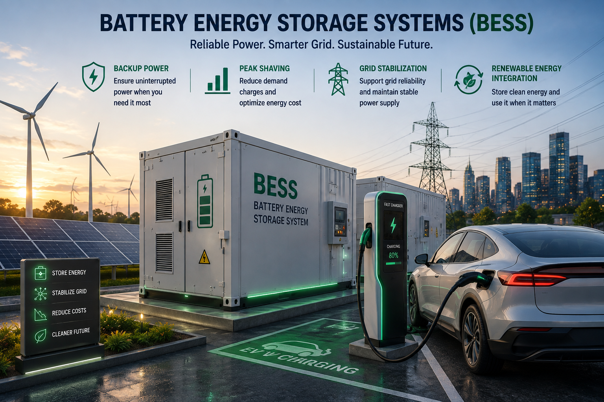

The Charzee BESS Monitor gives you a real-time view of your Battery Energy Storage System — charge level, health, charge/discharge cycles and alerts — from a single dashboard, anytime and anywhere.

A dedicated monitoring layer that tracks every key parameter of your Battery Energy Storage System in real time.
Live SoC & SoH Tracking
Cell & Pack Temperature
Trend & History Logs
Instant Fault Notifications
Web & Mobile Dashboard
Role-Based Access Control
From single-site installations to multi-location battery fleets, the BESS Monitor keeps operators informed.
Track home battery charge, backup readiness and usage patterns.
Monitor storage performance across offices, malls and campuses.
Ensure battery readiness supporting peak EV charging demand.
Correlate solar generation with battery charge and discharge cycles.
Track state of health across grid-support battery installations.
Centralized dashboard for operators managing several BESS units.
Built to give operators clear, actionable insight into battery health, performance and safety.
View live charge level, power flow and system status at a glance.
Get notified immediately of faults, overheating or abnormal behavior.
Analyze charge/discharge trends and long-term battery health.
Monitor your BESS from a browser or mobile device, anywhere.
Scheduled performance and health reports for site operators.
Role-based logins keep monitoring data safe and controlled.
Integrates with your BESS via BMS communication protocols to surface live and historical data on a single dashboard.
| Monitored Parameters | State of charge, state of health, voltage, current & temperature |
|---|---|
| Connectivity | Integrates with BMS via standard communication protocols |
| Access | Cloud-based web dashboard and mobile access |
| Alerts | Real-time notifications for faults and abnormal conditions |
| Reporting | Scheduled and on-demand performance reports |
| Data Security | Role-based access control and secure data transmission |
| Deployment | Site assessment, integration, commissioning and support |
We help integrate, configure and support BESS monitoring tailored to your site's storage capacity and needs.
Configured to match your BESS make, model and BMS protocol.
End-to-end support from integration to dashboard commissioning.
Analytics designed to help extend battery life and performance.
Monitor your BESS remotely from any device, at any time.
Instant alerts help teams act quickly on faults or anomalies.
Ongoing technical support and dashboard assistance.
Get details about dashboard features, monitored parameters and integration options for the Charzee BESS Monitor.
Overview of monitoring features, dashboard views and benefits.
Review monitored parameters, connectivity and data security.
Common questions about dashboard access, alerts and integration.